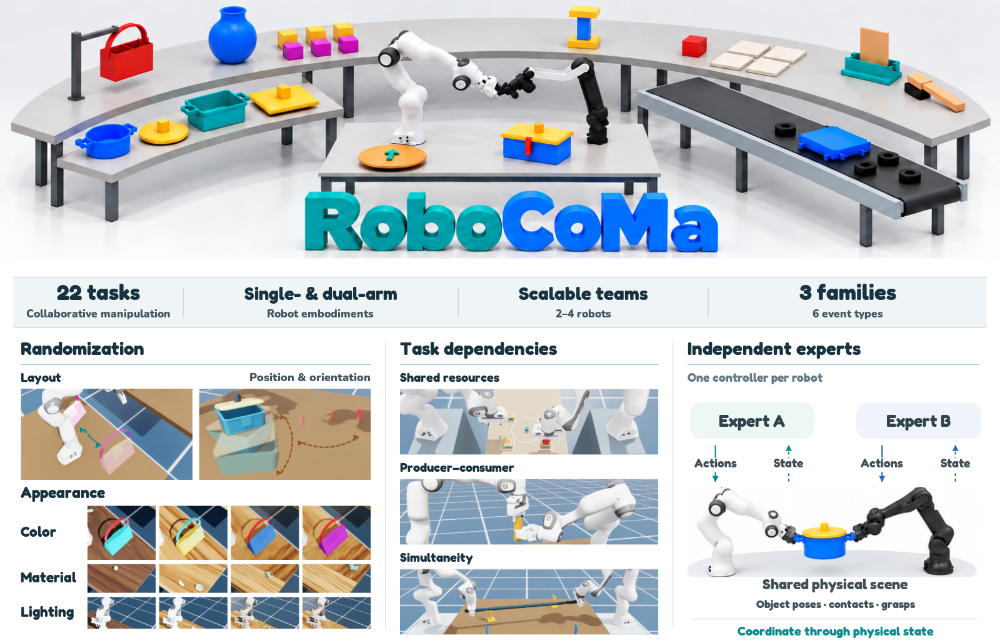

<!doctype html><html lang="zh-CN"><meta charset="utf-8"><meta name="viewport" content="width=device-width,initial-scale=1"><title>RoboCoMa 修改版下载</title><style>body{font:18px system-ui;background:#f4f7f8;color:#18323f;margin:0}main{max-width:1200px;margin:auto;padding:32px 20px}a{display:inline-block;background:#087f86;color:white;padding:14px 22px;border-radius:10px;margin:8px;text-decoration:none;font-weight:700}img{width:100%;background:white}h2{margin-top:36px}</style><main><h1>RoboCoMa 修改版 v14</h1><p>已恢复原立体字标；圆润粗体，放大 Appearance、Color、Material、Lighting；右下角为双臂抬蓝锅黄盖。</p><a href="latest.png" download="RoboCoMa-v14.png">下载修改版 PNG</a><a href="latest.svg" download="RoboCoMa-v14.svg">下载修改版 SVG</a><a href="latest.pdf" download="RoboCoMa-v14.pdf">下载修改版 PDF</a><details><summary>最初原图 v7</summary><a href="original.png" download>原图 PNG</a><a href="original.svg" download>原图 SVG</a></details></main></html>